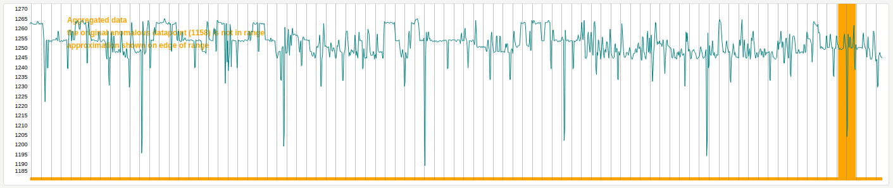

Webapp¶
The Webapp service is a simple gunicorn/Flask based frontend that provides a web UI to:
- Visualise the latest anomalies that have been triggered.
- Visualise historic anomalies that have been recorded by Panorama.
- An api to query Redis for a metric timeseries which returns the timeseries in
json e.g.
/api?metric=skyline.analyzer.hostname.total_metrics - An api to query Graphite for a metric timeseries which returns the timeseries in
json that takes the following parameters:
graphite_metric- metric namefrom_timestamp- unix timestampuntil_timestamp- unix timestamp- e.g.
/api?graphite_metric=skyline.analyzer.hostname.total_metrics&from_timestamp=1370975198&until_timestamp=1403204156
- Publish the Skyline docs.
- Browse the Redis DB with a port of Marian Steinbach’s excellent rebrow https://github.com/marians/rebrow
A basic overview of the Webapp¶
Deploying the Webapp¶
Originally the Webapp was deployed behind the simple Flask development server, however for numerous reasons, this is less than ideal. Although the Webapp can still be run with Flask only, the recommended way to run the Webapp is via gunicorn, which can be HTTP proxied by Apache or nginx, etc. The gunicorn Webapp can be exposed just like the Flask Webapp, but it is recommended to run it HTTP proxied.
Using a production grade HTTP application¶
It must be noted and stated that you should consider running the Skyline Webapp behind a production grade HTTP application, regardless of the implemented basic security measures. Something like Apache or nginx serving the Webapp via gunicorn.
This may seem like overkill, however there are a number of valid reasons for this.
Production infrastructure¶
It is highly probable that Skyline will often be run on cloud based infrastructure which is public and should therefore really be considered production.
Flask has a Deploying Options sections that covers running Flask apps in production environments. See http://flask.pocoo.org/docs/0.11/deploying/
In addition to that, considering that the Webapp now has MySQL in the mix, this element adds further reason to properly secure the environment.
There is potential for XSS and SQL injection via the Webapp, ensure TRUSTED access only.
Apache and gunicorn¶
Although there are a number of options to run a production grade wsgi frontend,
the example here will document serving gunicorn via Apache reverse proxy with
authentication. Although Apache mod_wsgi may seem like the natural fit here, in
terms of virtualenv and Python make_altinstall, gunicorn has much less
external dependencies. gunicorn can be easily installed and run in any
virtualenv, therefore it keeps it within the Skyline Python environment, rather
than offloading very complex Python and mod_wsgi compiles to the user,
orchestration and package management.
Apache is a common enough pattern and gunicorn can be handled within the Skyline package and requirements.txt
See etc/skyline.httpd.conf.d.example for an example of an Apache conf.d
configuration file to serve the Webapp via gunicorn and reverse proxy on port
8080 with basic HTTP authentication and restricted IP access. Note that your
username and password must match in both the Apache htpasswd and the
settings.WEBAPP_AUTH_USER/settings.WEBAPP_AUTH_USER_PASSWORD
contexts as Apache will authenticate the user and forward on the authentication
details to gunicorn for the Webapp to also authenticate the user.
Authentication is enabled by default in settings.py.
Feel free to use nginx, lighttpd, et al.
Securing the Webapp¶
Firewall rules¶
The Webapp should be secured with proper firewall rules that restrict access
to the settings.WEBAPP_IP and settings.WEBAPP_PORT (and/or just
the reverse proxy port for gunicorn if being used) from trusted IP
addresses only.
Basic security¶
There are some simple and basic security measures implemented with the Webapp.
IP restricted access¶
The default settings.WEBAPP_ALLOWED_IPS only allows from 127.0.0.1, add
your desired allowed IPs.
psuedo basic HTTP auth¶
There is single user that can access the web UI all access must be authenticated.
Restricted by default¶
These simple measures are an attempt to ensure that the Skyline web UI is not totally open by default, but rather totally restricted by default. This adds a bit of defense in depth and hopefully will mitigate against unauthorized access in the event that some day, someone may have their firewall misconfigured in some way, either through error or accident.
These basic restrictions DO NOT replace the need for proper firewall rules or a production grade HTTP application.
Logging¶
Flask’s development server is based on werkzeug, whose WSGIRequestHandler is, in turn, based in the BaseHTTPServer from the standard lib. This means that WSGIRequestHandler overrides the logging methods, log_request, log_error and log_message, to use it’s own logging.Logger. So there is no access logging in Skyline Webapp log. It is possible to hack this around a bit, but this means application error logging would get shifted from the Webapp log to the access log, which is not ideal.
Panorama web UI¶
Basic function¶
The Panorama web UI allows you to search the anomalies recorded by Panorama in
the database. It currently allows you to search through the anomaly records by
various filters, which are converted into MySQL SELECT queries which
return the details regarding the anomalies found from the search criteria. The
Webapp then returns these to the browser and the client side javascript then
passes the relevant metric details to the Webapp api endpoint to surface the
metric timeseries from Graphite and the api returns the timeseries json to the
browser to graph the timeseries.
Closest approximations¶
The Panorama anomaly records only hold the details regarding the anomaly, not the data. The Panorama UI takes the returned anomalies from a search and retrieves the timeseries for the time period relevant to the anomaly from Graphite on demand. The UI graphs the timeseries to visualise the context of the anomaly, as best possible. Due to the fact that Panorama is storing anomaly details in real time and the Panorama web UI is surfacing timeseries historically, any Graphite aggregations in timeseries can result in the specific anomalous datapoint not being present in the related timeseries. In these instances the Panorama graphs will indicate this and visually present a closest approximation of where the anomalous line would be, using a thicker, orange horizontal line as the indicator, rather than the thinner, normal red horizontal line.
Time zones¶
It must be noted that the Panorama view graphs can be rendered differently
depending on the browser and server time zone. The original dygraph renders
used the javascript Date function to generate the datetime ticker, etc. If
your Graphite server happens to be in a different time zone to user browser,
this would display clock skews where the Panorama reported anomaly details do
not match the graph times displayed. Webapp in the Panorama view allows you to
either use the browser time zone or use a fixed timezone so that all rendered
graphs are the same no matter where is the world they are viewed from.
By default, the browser time zone setting is used, as per the original Skyline
UI, you can use settings.WEBAPP_USER_TIMEZONE and
settings.WEBAPP_FIXED_TIMEZONE to modify this behavior if required.
rebrow¶
Skyline uses a modified port of Marian Steinbach’s excellent rebrow Flask Redis browser - rebrow. A modified port was used for a number of reasons:
- rebrow does not handle msg-pack encoded keys.
- The pubsub functionality was unneeded.
- Serving it in an iframe was bothersome.
- Having an additional dependency, app and service for another Flask app seemed to be a bit of overkill.
- Having it native in the Skyline Webapp UI was neater and prettier.
Please do clone https://github.com/marians/rebrow, just so Marian gets some clones.
With the addition of a number of Panorama and other app related keys,
rebrow adds a window into Redis, to allow for the verification of
key creation and providing a view of *last_alert.* and
panorama.mysql_ids.* keys.
Basic function¶
The Panorama web UI allows you to search the anomalies recorded by Panorama in
the database. It currently allows you to search through the anomaly records by
various filters, which are converted into MySQL SELECT queries which
return the details regarding the anomalies found from the search criteria. The
Webapp then returns these to the browser and the client side javascript then
passes the relevant metric details to the Webapp api endpoint to surface the
metric timeseries from Graphite and the api returns the timeseries json to the
browser to graph the timeseries.